Villes principales
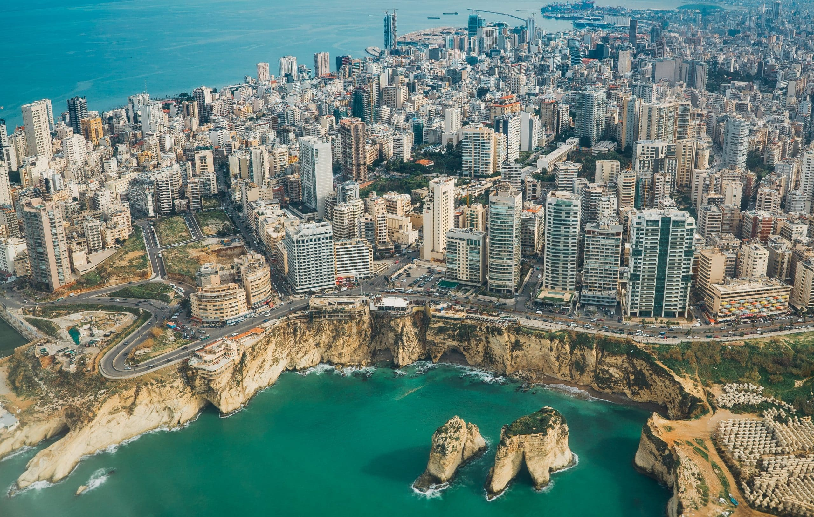
Beyrouth
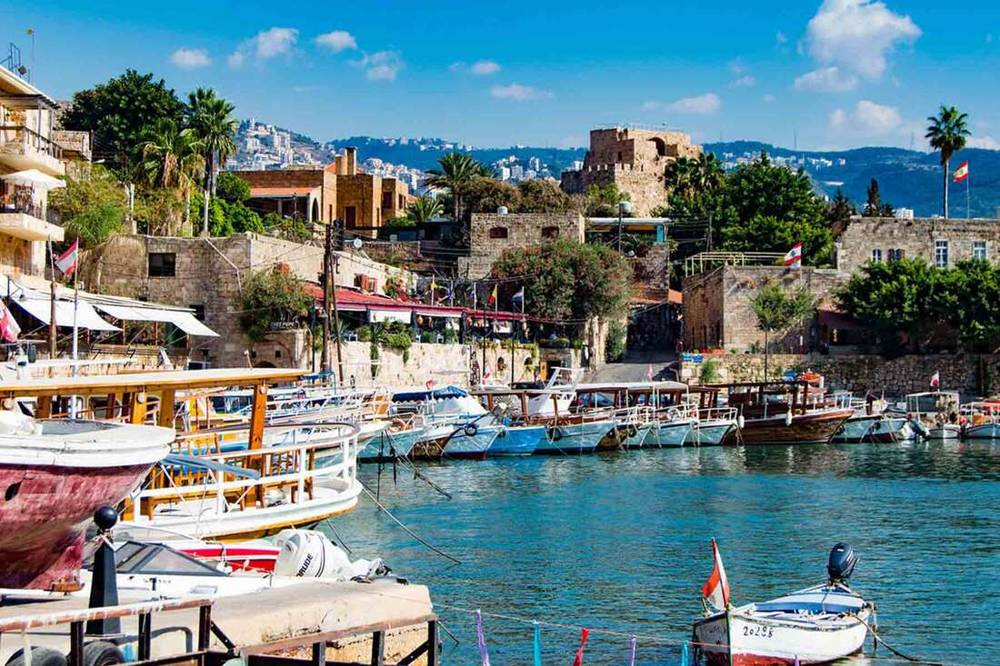
Byblos
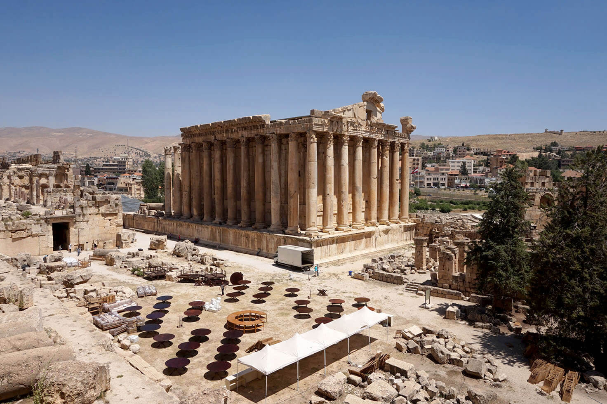
Baalbek
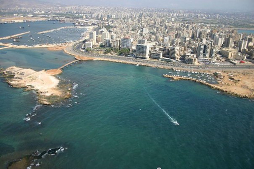
Tripoli
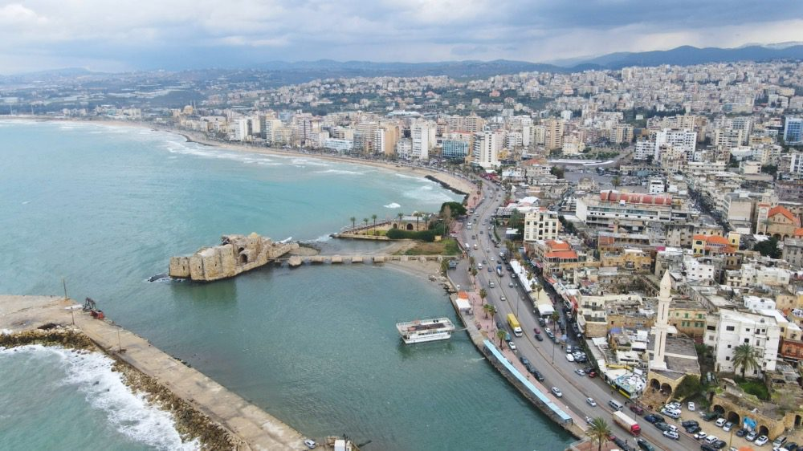
Sidon

Tyre
Un voyage entre histoire, nature et culture

Beyrouth

Byblos

Baalbek

Tripoli

Sidon
Tyre
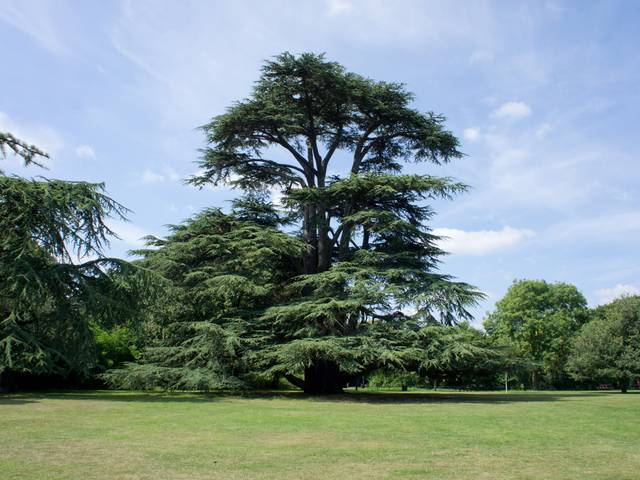
Cèdres

Qadisha
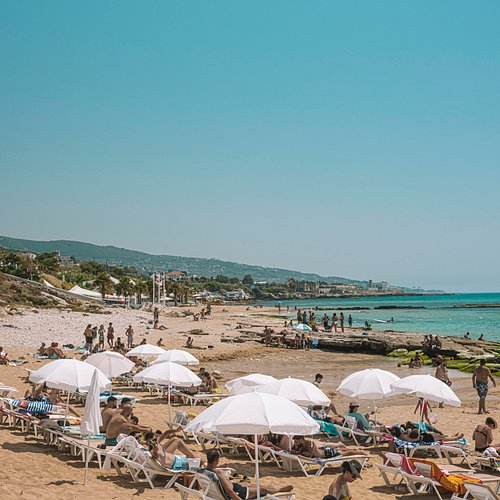
Plages
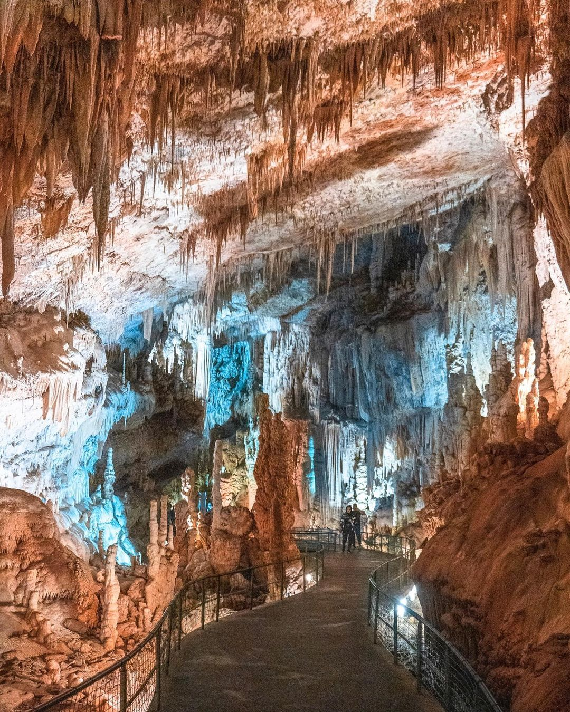
Jeita
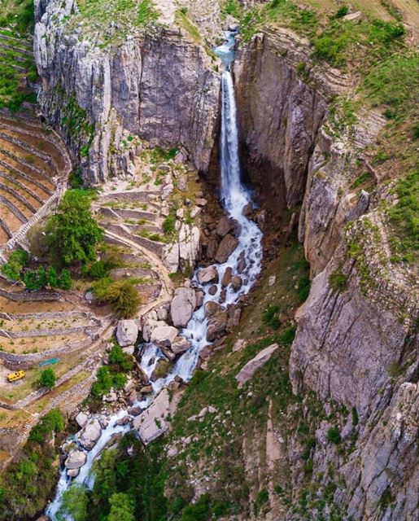
Faraya
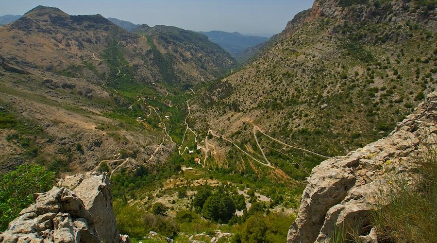
Tannourine
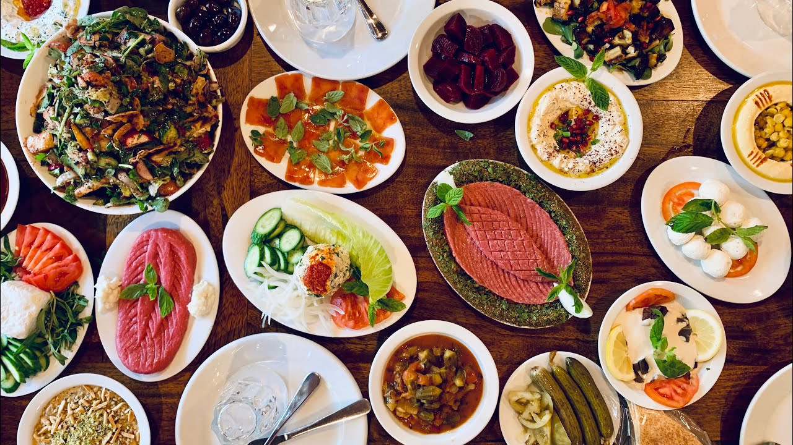
Gastronomie
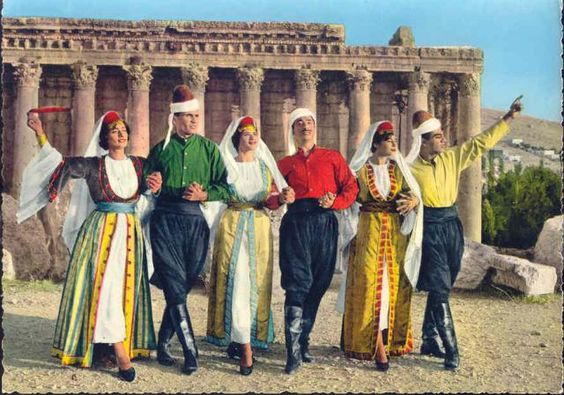
Traditions
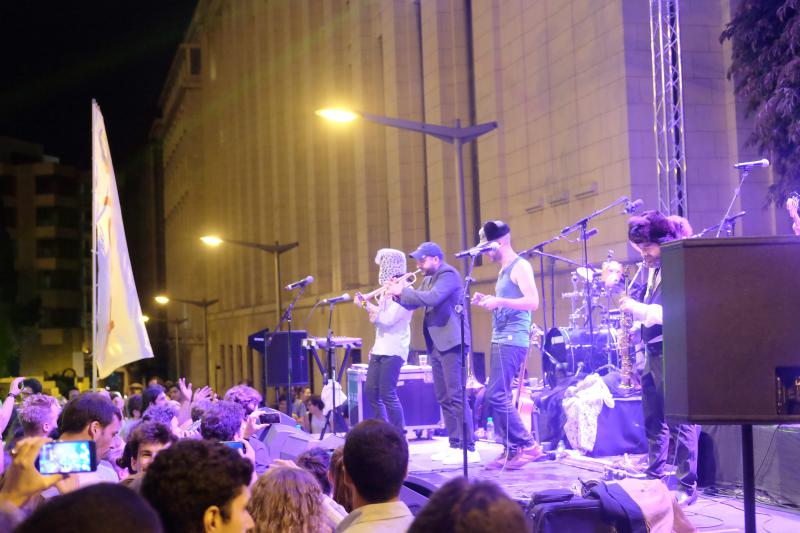
Musique
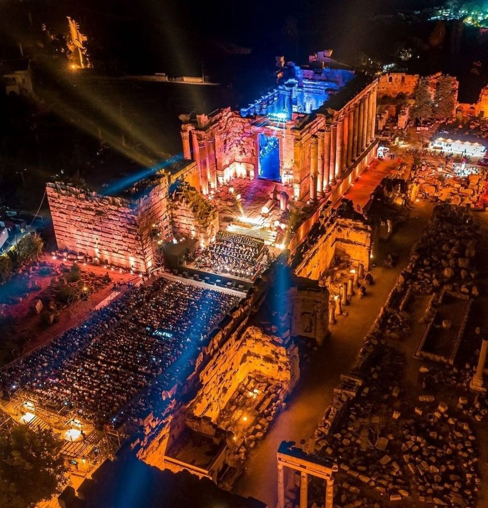
Festivals
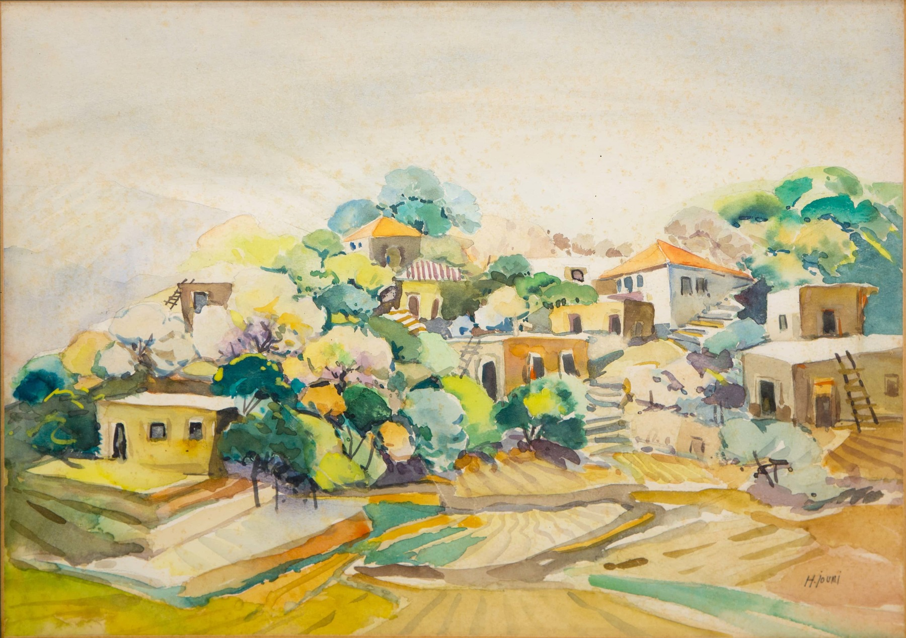
Art
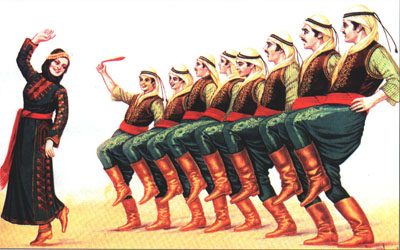
Danse
Explorer les ruines
Mer
Randonnée
Ski
Parapente
Road Trip
🌸 Printemps (avril à juin)
Le printemps est souvent considéré comme la meilleure période pour visiter le Liban. Les températures sont douces, la nature est en pleine floraison et les paysages sont particulièrement verdoyants.
☀️ Été (juillet à août)
L’été est la saison la plus animée au Liban. Le pays attire beaucoup de touristes et la vie nocturne est à son maximum, surtout à Beyrouth et sur la côte.
🍂 Automne (septembre à novembre)
L’automne est une saison calme et agréable, souvent sous-estimée. Les températures restent douces et les paysages prennent des teintes magnifiques.
❄️ Hiver (décembre à mars)
L’hiver offre une expérience unique au Liban : il est possible de skier en montagne tout en étant proche de la mer. Les températures varient selon l’altitude.